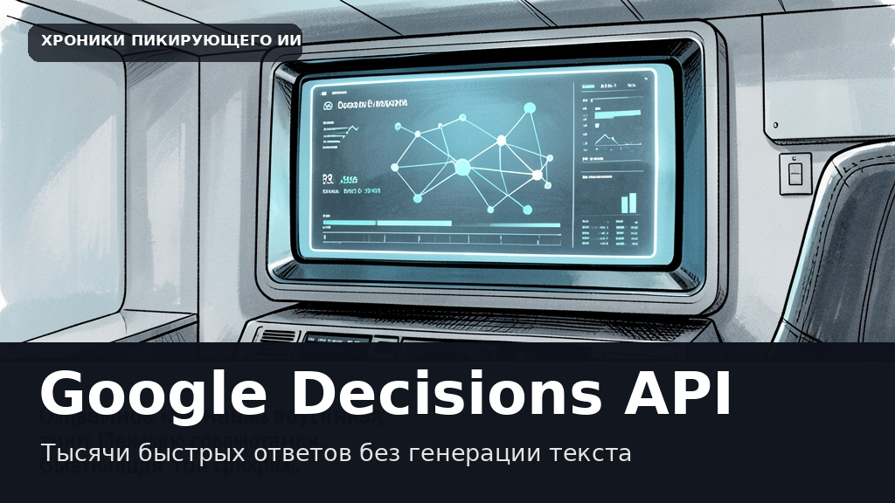

Google научила нейросеть принимать тысячи решений за секунды без генерации текста
Этот текст и иллюстрация созданы автоматически. В статье могут быть неточности; это не опубликованная редакционная новость.

Компания Google представила интерфейс Gemini Decisions API, созданный для моментальной обработки комплексных запросов. В основе системы лежит новая модель Gemini Decision 1, которая кардинально отличается от привычных генеративных ассистентов. Вместо того чтобы посимвольно выстраивать ответ, новинка оценивает до тысячи вариантов за один проход, выдавая результат вместе с вероятностями и коэффициентами уверенности всего за 150–250 миллисекунд.
Инструмент ориентирован на закрытые задачи вроде маршрутизации запросов, проверки политик безопасности или автоматической оценки контента. Модель способна одновременно анализировать текст, изображения, аудио, видео и PDF-документы размером до 256 тысяч токенов. Пользователь может отправить смешанный мультимодальный ввод и сразу задать до тысячи независимых вопросов трех типов: бинарные проверки да/нет, множественный выбор и оценку по упорядоченной шкале.
По заверению разработчиков, такой подход позволяет обойтись без генерации лишнего текста, что существенно снижает нагрузку на вычислительные мощности. Стоимость обработки составляет 10 центов за миллион входящих токенов, при этом выходные токены вовсе не тарифицируются. Благодаря этому Gemini Decision 1 оказывается почти в пять раз дешевле аналогичных моделей при решении сопоставимых задач.
Дата объявления в RSS: 2026-11-11. Дата черновика: 2026-11-12.